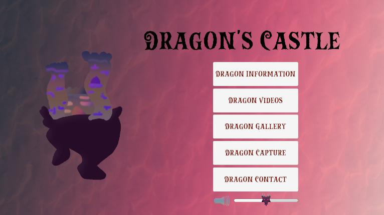
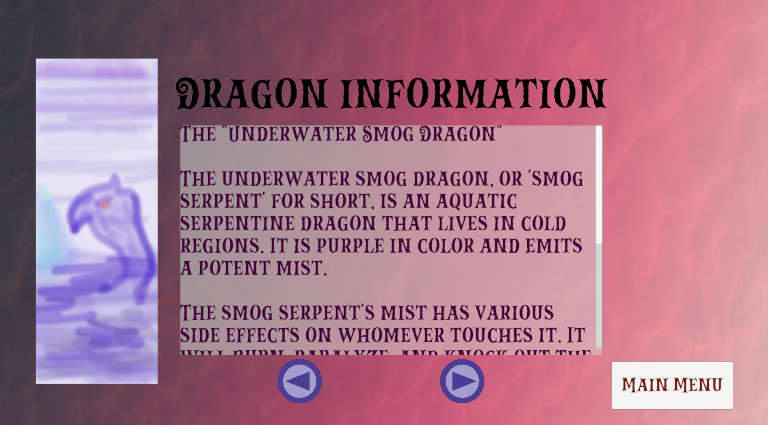

Unity Project (Dragon's Castle)

"Dragon's Castle" is a Unity project I worked on two years ago as an assignment. The project is made for android and uses Unity UI. It is comprised of 6 menus, each with different purposes.
The Main Menu

The main menu for the application, this allows you to go to any of the five content menus.
-Dragon Information: A menu for viewing different dragons and information about them.
-Dragon Videos: A menu for viewing reptile videos.
-Dragon Gallery: A gallery for viewing bigger images of dragons.
-Dragon Capture: A menu that allows you to take pictures using your phone.
-Dragon Contact: A menu for inputting your contact information.
Dragon Information Menu

A menu for highlighting the ability to switch images and text. The menu lets the user cycle through different dragons to see information about them.